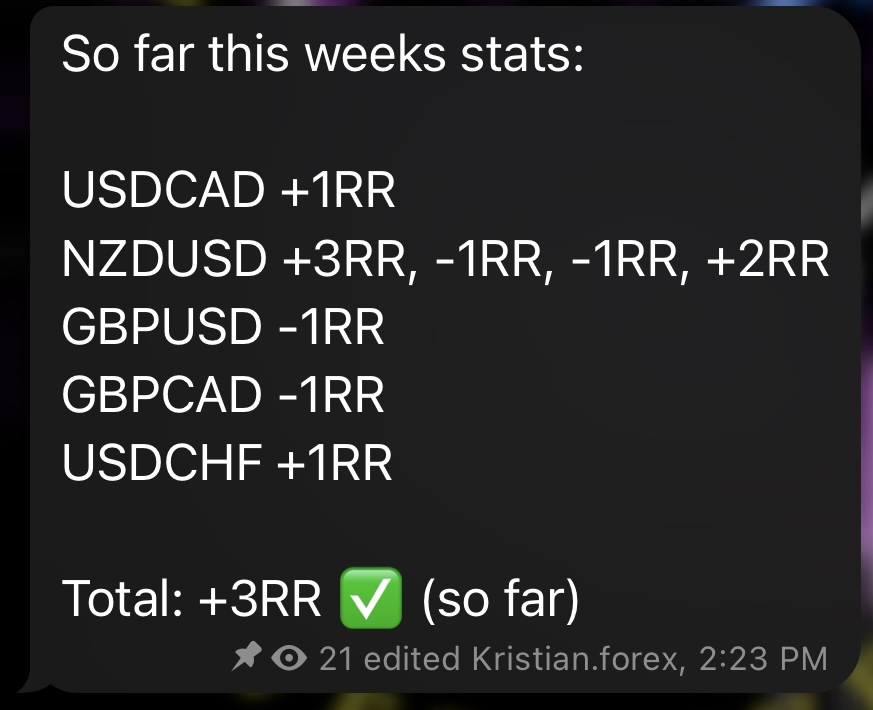
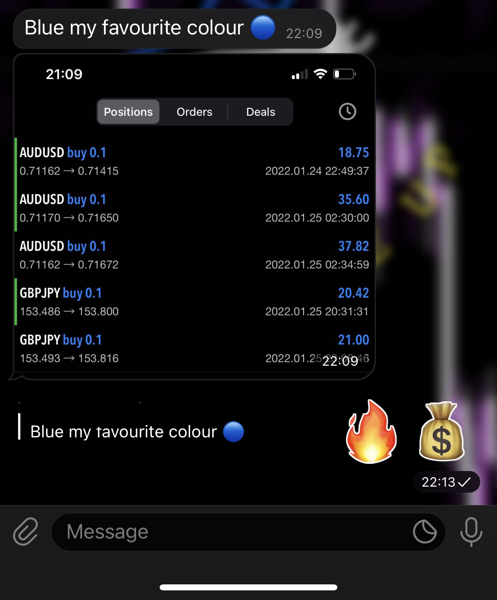

Matchroom / dark archive / community first
NGU TRADING
Structure for traders who want to get funded and stay consistent.
NGU connects three layers that usually live in separate places: a serious trading community, a cleaner prop-firm compare desk, and NGU Edge, the daily execution system built to fix overtrading, revenge trading, and rule-breaking under pressure.




ProofReal trader feedback and tracked results stay visible across the surface.
CompareFunded firms are framed as route choices, not discount banners.